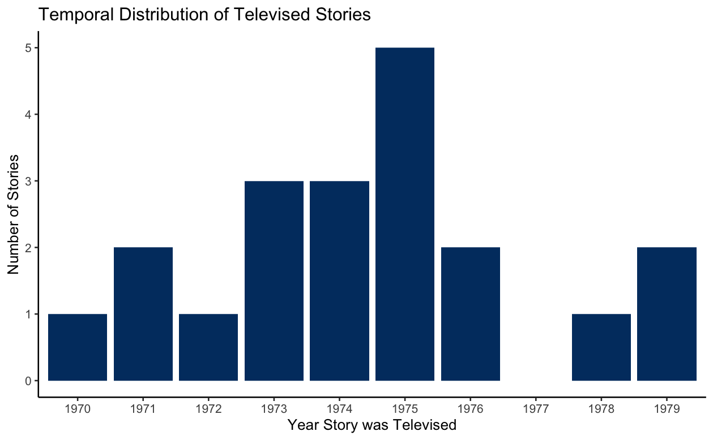
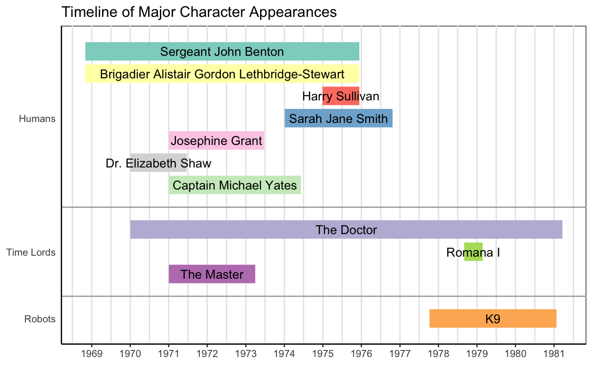

The Big Picture

My final dataset for this project consists of 20 books (10 featuring the Third Doctor, and 10 featuring the Fourth).
At left is a bar graph depicting the temporal distribution of these stories. Because the novelizations are being used as proxies for televised stories, the years of televised stories are given (rather than the much later, much more scattered publication dates for the books).

At right are the major characters featured in my final dataset. These do not include all of the incarnations of the Doctor or all of the companions featured on the show at the time period I am looking at, but instead capture the duration of the Third and Fourth Doctors and all major deuragonists and antagonists in the books I analyzed.